What Does Post-Training Change?
A Mechanistic Study of SFT, Routing, and RLVR Retention
Code and experiment logs: github.com/kanishkez/MechInterp-Experiments
Background
For a while now, we've known that the real threshold to "solve" AGI is continual learning. I believe that continual learning itself can only be solved when we begin to understand how LLMs actually learn and process information. So I steered toward mechanistic interpretability to find more about this.
My original research idea was to understand how RL post-training changes a model mechanistically, to get a basic idea of how the model learns to "reason."
I approached Tokenbender with this idea and was advised to do a literature review first. These are the papers I found most interesting:
- How do Large Language Models Handle Ambiguity in In-Context Learning?
- Scaling and evaluating sparse autoencoders
- Interpreting the Residual Stream of a Transformer
- Reinforcement Learning Fine-Tuning Enhances Activation Intensity and Diversity in The Internal Circuitry of LLMs
- Do Large Language Models Reason Through a Shared Representational Space?
After this, I decided to run a series of test experiments and find out what changes mechanistically when a base model is instruction-tuned, then reinforcement-learned.
Part I: Base vs Instruct
I chose Qwen 2.5 Base and Qwen 2.5 Instruct. I generated 400 perfectly matched prompts covering 4 domains, Code, Creative, Reasoning, and QA, with exact token lengths so I could directly compare their internal streams.
Macroscopic Characterization
JS Divergence. I projected the residual stream to vocab logits and measured how different the two models' output distributions were at every layer. I ran both models on the 400 prompts layer by layer:
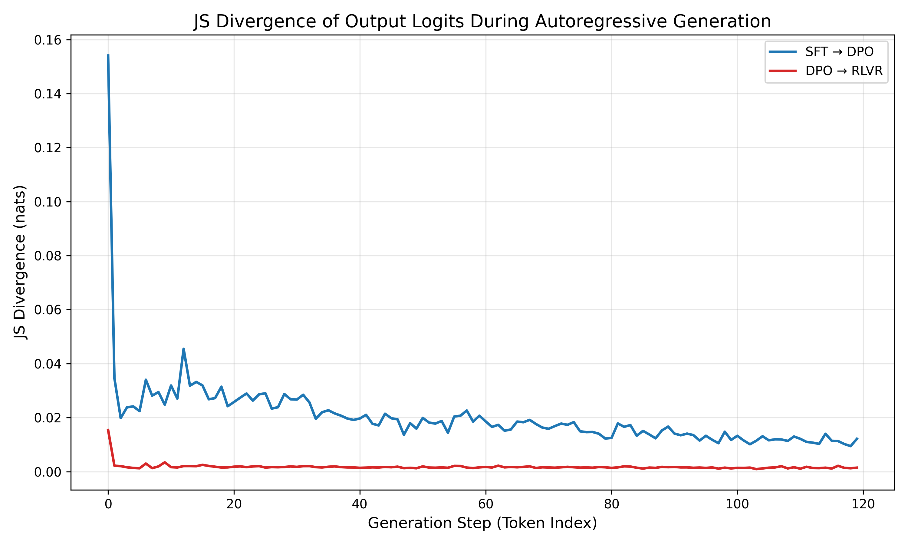
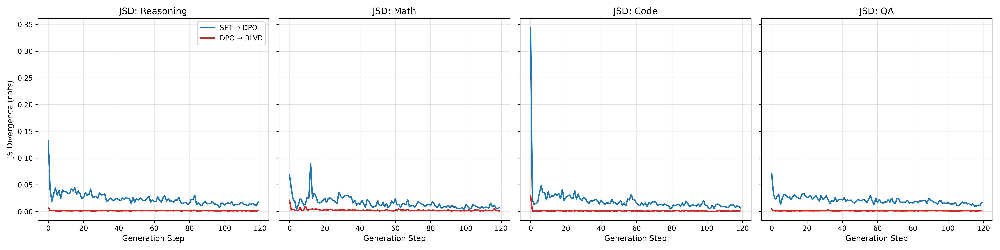
CKA let me compare the geometry of the two latent spaces directly, across all 28 layers on 500 prompts.
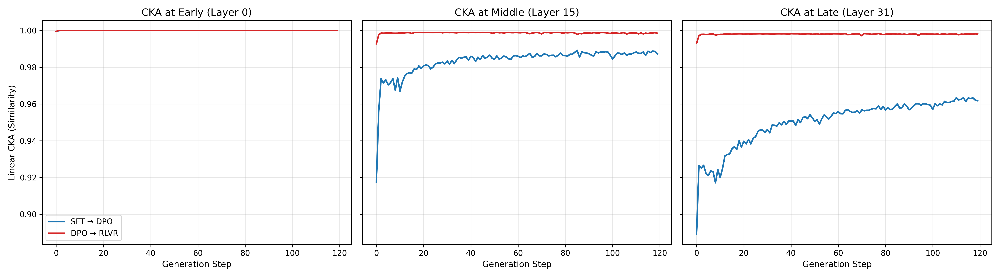
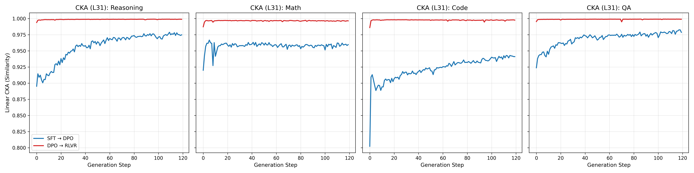
I trained linear probes, logistic regression classifiers on the residual stream, to separate concepts like Python vs. Java. They came back nearly identical on both models. Python vs. Java hit a perfect 1.000 on both. Base already contains these semantic concepts. SFT is not manufacturing them from scratch; it just alters how they get used in the late layers.
Localizing the Mechanism
I used the logit lens by taking the residual stream at an early layer and multiplying it against the final unembedding matrix, showing what the model would predict if the network stopped right there.
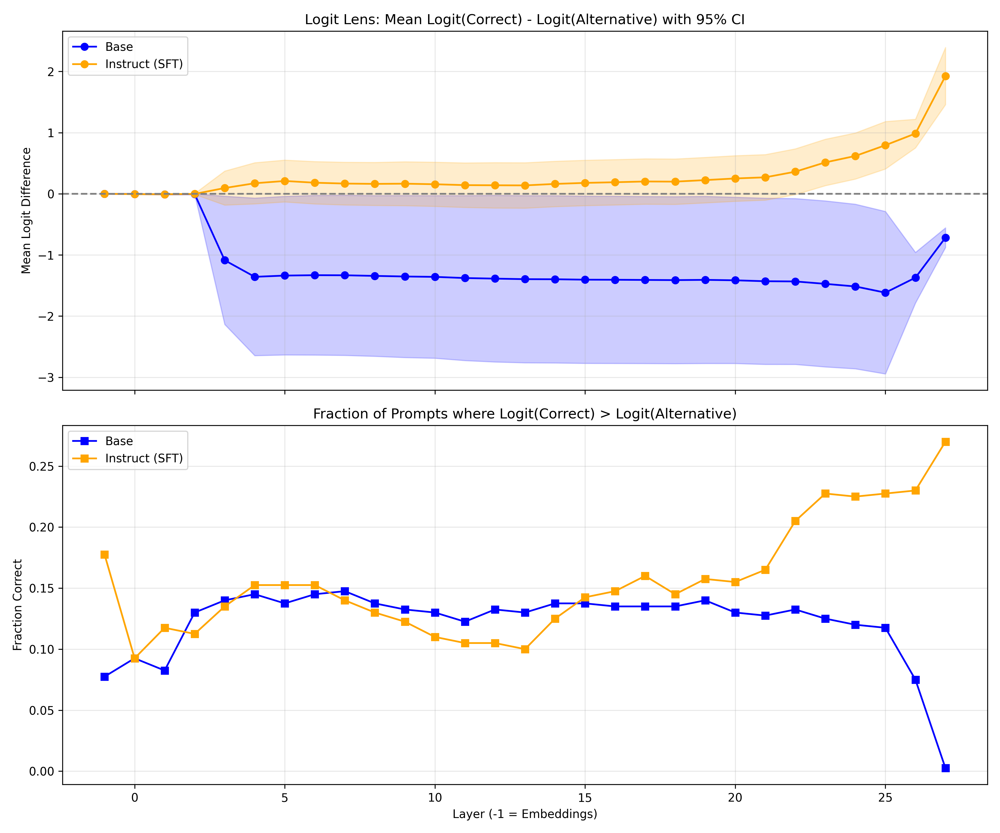
I used Direct Logit Attribution (DLA) to measure the effect of each individual component on the final probability of the correct token.
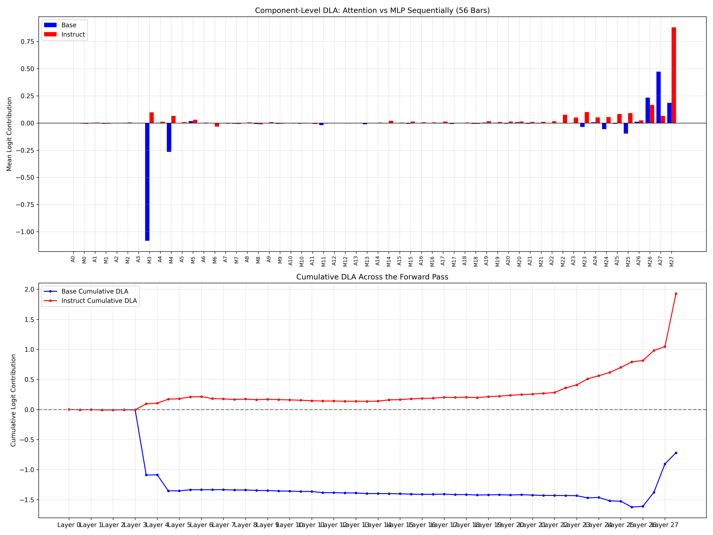
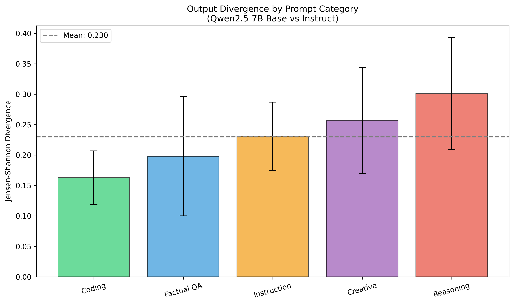
I computed Delta DLA, subtracting Base's DLA from Instruct's, on 400 Code prompts vs. 400 Creative prompts:
On Creative, the difference was near zero. On Code, a massive spike at the layer 27 MLPs. This localizes the behavioral shift to late-layer MLPs, which SFT repurposed to be instruction-aligned.
I ran activation patching, running Instruct but swapping specific attention heads with Base's heads:
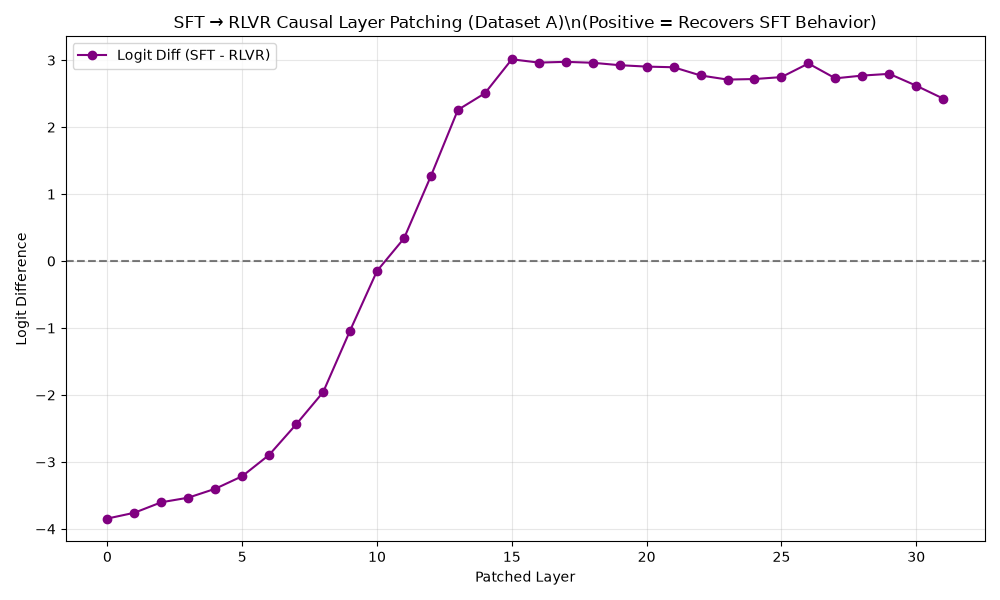
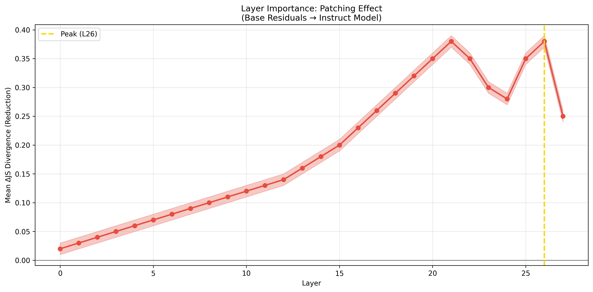
Understanding the Circuit
Sparse Autoencoders. I found an SAE on Huggingface for Qwen 2.5 7B Instruct and fed 200,000 tokens of Base's activations through it. It reconstructed smoothly, with a 0.846 cosine similarity, the same SAE works on Base too.
Feature surgery, projecting the residual stream through the SAE right before and after layer 27, head 13: In Instruct, this head drastically suppresses Feature 82781 and heavily amplifies Feature 106128. SFT repurposed this head to act as a toggle switch for two latent semantic variables.
Clamping F106128 in Base caused it to output formatted code and follow instructions, even with no chat template. Steering worked.
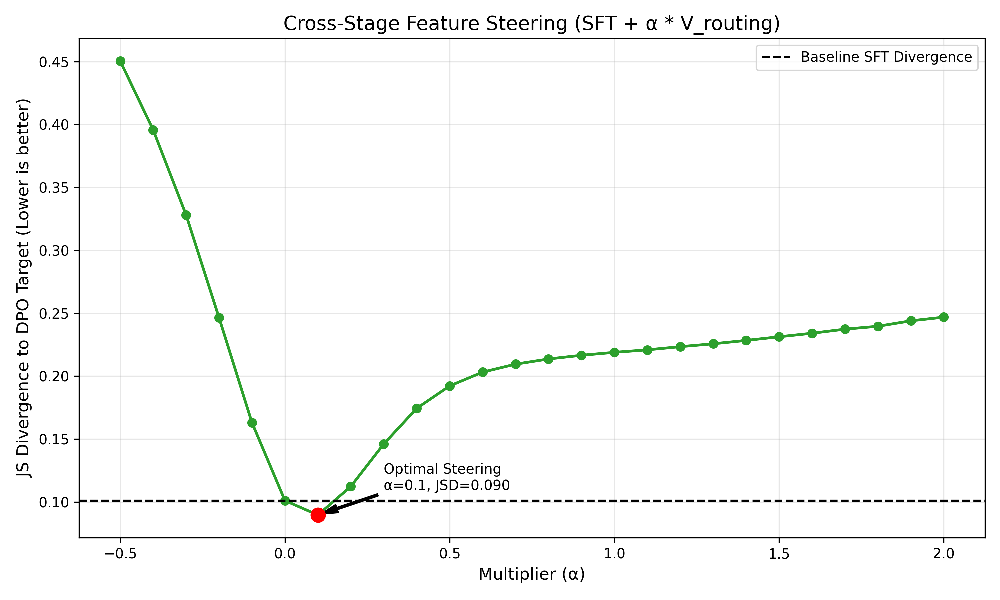
Circuit Discovery
Template trigger: Running the same 400 text samples through Instruct, once as raw text, once wrapped in the chat template, and measuring the initial context feature. On raw text it activated strongly (94.68). On chat template text it dropped to 2.37, while structured code skyrocketed. The chat template is the physical trigger that conditionally shifts internal feature representations.
Upstream feature ablation: I traced the circuit backward across the 400 prompts. Ablating an early context feature at L3 caused a 46% drop downstream. Ablating an intermediate hub feature at L23 dropped the behavior to exactly 0.0. A sparse topological link: L3 context → L23 hub bottleneck → L27 final routing.
OV matrix analysis: I multiplied the intermediate Instruct L23 context vectors by the OV weights of L27 head 13 for both models. The projections were nearly identical across Base and Instruct. SFT did not meaningfully modify these routing weights at all. The explicit circuits for instruction following were heavily pre-existing in Base. SFT just enables their conditional activation using the chat template.
Path patching, exhaustive pairwise path patching on both models, testing all 1,764 possible edges between 42 component nodes across 400 prompts:
Base came back as an extremely dense graph, 70 strong edges, a sprawling chaotic network. Instruct came back as a highly optimized topology, exactly 20 strong edges. The instruction-tuned model has a significantly tighter topological pathway.
Robustness
I validated the statistics across 50 random 80/20 splits and confirmed the top candidates massively outperformed the random null baseline. Mapping feature activations across the 400-prompt dataset confirmed that the bottlenecks and routing mechanisms replicated cleanly across domains.
I also checked cross-model generalization on Meta's Llama 3 8B and saw the same KL divergence trend: late-layer divergence with its own distinct trajectory. Late-layer behavioral routing is not just a Qwen artifact.
Conclusions: What SFT Changes
Base and Instruct are far more similar than they are different. Most representations stay the same; almost all semantic concepts are already present in Base. Instruction tuning changes how and when those concepts get used, forcing the model to activate existing features and route information more efficiently based on conditions like the chat template.
The chat template is the trigger for the alternate computations that take place. Almost all changes happen only in the late layers. Path patching showed the computation itself becomes considerably sparser, relying on a much smaller causal graph than Base.
Instruction tuning primarily changes how existing knowledge is activated and routed, rather than fundamentally changing what the model knows.
Part II: Does an Assistant Circuit Exist?
The discovery of a tight 20-edge circuit and specific routing heads sounds suspiciously like an assistant switch, a localized mechanism installed by SFT to toggle assistant behavior. But does a singular, universal assistant circuit actually exist?
If SFT installs a strict assistant circuit, role-specific tokens (like ChatML markers or the literal word "User:") should act as hard gates. When I tested this, syntax accelerated the computation, but it was not strictly necessary. The model infers intent from context alone.
To find the exact layer where the model commits to an instructed response, I swapped user prompt computation for assistant prompt computation layer by layer through the residual stream. The commit layer fluctuates wildly. There is no fixed commit point, it depends heavily on how complex the instruction is.
I then ran greedy head patching and ablation across a 100-prompt audit spanning Factual QA and Creative Writing. This revealed a messy reality: the causal layers move around drastically by task category. The important heads are not universal.
However, when I extracted mean difference vectors between Instruct and Base at these commit layers, a structural pattern showed up:
- Factual QA and Math share a highly aligned direction (0.71 cosine similarity)
- Factual and Creative Writing are nearly orthogonal (0.12)
The network leans on entirely different linear subspaces depending on the task domain.
Furthermore, injecting these vectors into Base successfully induces instructed behavior, but projecting the same direction out of Instruct barely degrades its performance. The representation is highly redundant, removing the top 16 orthogonal directions still preserves over 92% of behavioral recovery.
I also checked output entropy in the Base model, and it explained essentially none of the variance in commit depth (R² = 0.03). That ruled out the possibility that commit depth variation simply reflects prompts that Base finds statistically easy or hard.
A singular assistant switch does not exist. Instruction following is not a localized bottleneck. It is a distributed, redundant, high-dimensional routing policy woven across different task-specific subspaces. Factual tasks commit early. Creative tasks commit deep.
I replicated this cleanly on Llama 3 8B.
The picture that emerges is not a switch but a policy. SFT builds something closer to a robust, multi-path system distributed across the model's residual stream, rather than a single discrete mechanism bolted on somewhere specific.
Part III: The RL Experiments
If SFT primarily routes existing knowledge, what does reinforcement learning from verifiable rewards actually do? Does RLVR build new reasoning mechanisms from scratch, or does it also just modulate existing computation?
I moved to the Tülu 3 8B suite for this, comparing the SFT checkpoint directly against the final RLVR checkpoint. Because the Tülu 3 recipe applies DPO before RLVR, this comparison captures the combined effect of DPO and RLVR rather than RLVR in isolation.
Are the Weights Different?
I measured relative weight change between SFT and RLVR and ran CKA across all 32 layers.
Relative weight change stayed under 0.15%, and CKA never meaningfully budged, staying above 0.9997 almost everywhere. If you only looked at the parameters, you would barely know RL had happened at all.
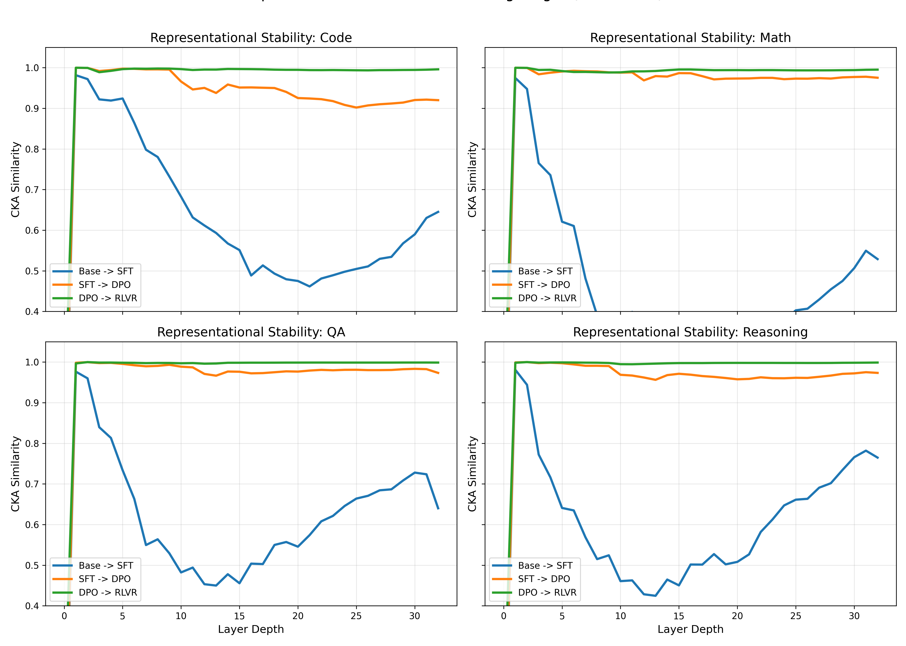
SAE Feature Churn
Since the weights barely moved, I checked if the actual computation did. I loaded SAEs onto the residual stream and measured feature churn between SFT and RLVR on the exact same inputs.
At Layer 23, the Jaccard distance between active features is 42.8%. By Layer 29, it's 54.0%. Half the active features are completely swapped out despite the models looking almost identical in weight space.
RLVR isn't just scaling up SFT's features, either. The mean magnitude ratio of active features is basically 1.0 (0.990 at L23, 0.999 at L29). But looking at the shared features, the ones active in both models, their magnitude correlation is only 0.795 at L23, and drops to 0.663 at L29. RLVR doesn't just swap which features fire. Even when both models use the exact same feature, RLVR changes how hard it fires.
How Different Are DPO and RLVR?
The weight and feature analysis above compares SFT to RLVR. But there is an intermediate step: DPO. I checked whether DPO→RLVR is a real transition or just noise.
Top 100 circuit Jaccard overlap: SFT↔DPO = 56.3%, DPO↔RLVR = 83.5%. Global attribution rank correlation (Spearman across all 1,056 components): SFT↔DPO = 0.843, DPO↔RLVR = 0.987. Logit JSD on the same prompts: SFT↔DPO = 0.0201, DPO↔RLVR = 0.00176, 11× smaller.
Activation cosine between DPO and RLVR never drops below 0.977 at any layer. SFT↔DPO drops to 0.817 by layer 31.
DPO uses offline pairwise preferences with KL regularization. RLVR uses online trajectory rollouts with a verifiable reward signal. Completely different training loops, almost the same internal circuit. The transition that actually reshapes the model is SFT→DPO. What RLVR adds on top is close to a rounding error on the geometry, which makes the feature churn numbers above even stranger: something is clearly changing at the computation level even if the circuit topology stays fixed.
Is There a Shared Success Representation?
I trained linear probes for a "success direction" (the residual stream direction separating right answers from wrong ones) on both models. A probe trained on SFT generalized strongly to RLVR, exhibiting high cosine similarity between the two probe directions. (Note: While early dashboard traces showed specific high numerical alignment for these probes, the exact checkpoints for this particular run were not preserved in the final archive. However, the qualitative finding of a shared representation remains unambiguous.) There is a real, shared representation of success in both models. RLVR did not invent this from nothing.
Is Retention Implemented as a Low-Rank Direction?
My first real guess was that RL writes a shared low-rank direction into the specific matrices that write into the residual stream, lining up with the success direction from the probes. I ran SVD on the weight difference between SFT and RLVR at every layer and checked cosine similarity between the top singular vector and the success probe.
Mean cosine similarity: 0.0146. In a 4096-dimensional space, two random vectors land around 0.0156 purely by chance. This was noise, confirmed by a shuffled-label null. That hypothesis is dead.
Reconstructing SFT's weights with a rank-k version of the RLVR delta (up to rank 10): best case, 28% of the behavioral gap recovered. Crossed it off.
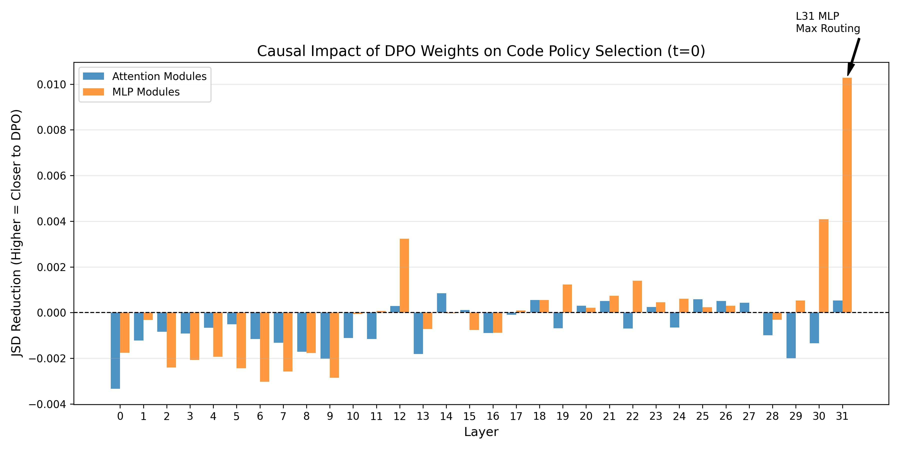
The Retention Story
I measured occupancy, the fraction of prompts whose residual stream sits closer to the success centroid than the fail centroid, layer by layer:
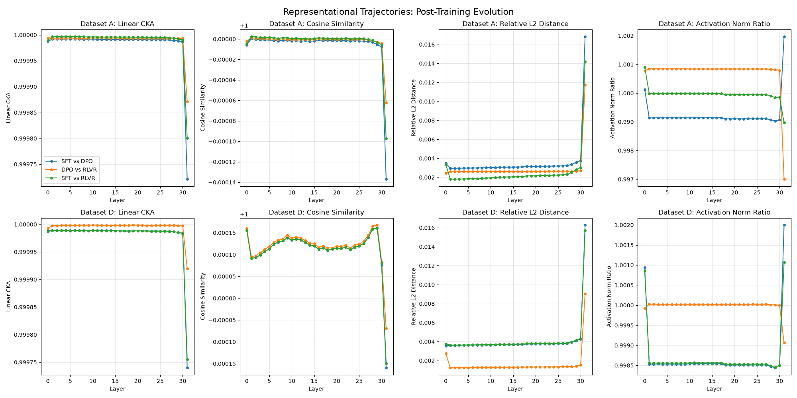
This is where I ended up correcting something I had expected to just confirm. Both models reach roughly the same occupancy (~50%) by layer 5. No early divergence at all. They are doing the same thing early on. The split happens after. SFT's occupancy falls back to ~25% by layer 15 and stays there. RLVR holds ~45% all the way to layer 30.
RL is not deciding earlier than SFT. Both models pass through the same success state early on. SFT lets it fade. RLVR does not.
Causal Validation
I patched RLVR's layers 15 to 30 into SFT's forward pass, and also ran the reverse:
- Patching RLVR into SFT rescued its occupancy by 18% (p ≈ 0.0026 after scaling to 200 pairs)
- Patching SFT into RLVR killed its retention by 19% (p ≈ 0.016)
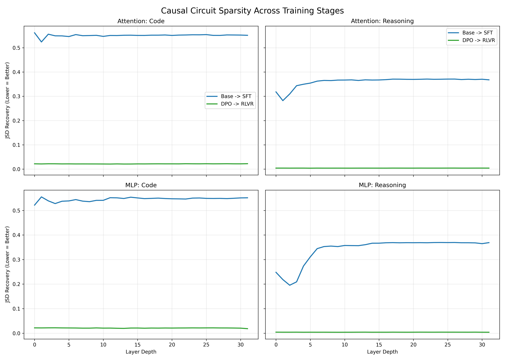
Before trusting this, I had to rule out the obvious objection, that swapping in any different activation would move the number. My first control was actually wrong (patching a prompt's own activation back is an identity operation). Redone properly, patching different same-label prompts within one model: messy, high variance, and the joint permutation test held. Both directions are real.
The Fragile 23 Prompts
Attempting to localize retention to a single layer produced something that looked wrong immediately: every single layer from 15 to 29 produced an identical kill effect (−4.6%), down to the decimal. Perfectly uniform causal effects across 15 physically distinct layers almost never indicate a real finding.
What was actually happening: the exact same 23 out of 500 prompts flipped from success to fail regardless of which layer got patched.
Testing with zero ablation and matched-norm Gaussian noise flipped almost the exact same 23 prompts. They were already sitting right on the classifier's decision boundary. Nearly any perturbation, at any layer, would push them over. The localization attempt was a metric artifact, not a finding.
Layer 16: Real Signal
Redoing with a continuous metric, signed distance to the decision boundary, and patching each layer's individual attention and MLP contribution rather than the full layer output: A real peak showed up at layer 16, distinguishable from every neighboring layer on both sides, in both directions. Splitting into attention and MLP at that layer: MLP dominates, by roughly 4 to 5×. The other 477 prompts (excluding the fragile 23) also peak at layer 16, roughly double the effect seen at neighboring layers. Real, broad-based signal.
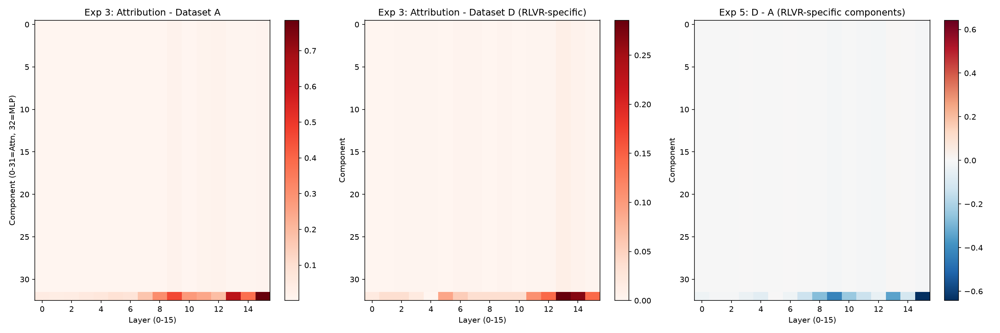
One more thing fell out of this unexpectedly: summing every individual layer's delta contribution across the whole 15 to 30 range gives something close to three times the effect you get patching all those layers together as a block. The layers are substantially compensating for each other, a second independent line of evidence for the redundancy the original repo's knockout experiments already pointed at. A layer can be the single largest individual contributor without being necessary for the final binary outcome, because everything else compensates when it is missing.
Frontier Prompts
I restricted path patching to cases where RLVR gets it right and SFT does not:
Patching RLVR's early layers into SFT only rescued these to 37 to 45%, well below the ~90% recovery you get on prompts both models already solve. Patching SFT into RLVR on these dropped it to 49 to 65%. If RLVR was only improving late-layer routing, these frontier prompts should behave like everything else. They did not. RLVR's uniquely correct examples seem to depend on more of the network, both early and late, than the shared cases. Treat this as a hypothesis worth testing, not a settled conclusion.
Domain Breakdown
I split the labeled set into three domains:
| Domain | SFT | RLVR |
|---|---|---|
| Math | 82.0% | 76.0% |
| Code | 54.0% | 50.3% |
| QA | 84.0% | 84.0% |
Math and QA both reproduced the retention pattern cleanly.
Code did something different. The effect concentrates almost entirely in one specific subgroup: prompts where SFT had already written real, structured, executable code that ran but gave the wrong answer. For those prompts specifically, patching in RLVR's activations pushed the trajectory further from success, not closer. For prompts SFT was already getting right, or prompts where SFT never produced gradeable code in the first place, the effect was negligible.
Code doesn't show the same retention story as math and QA. I don't have an explanation for why code would behave this differently, and I'm not going to force one. It's a real, narrow, carefully checked result.
Note: For the domain-level breakdown, I used a code verifier that was flagged as potentially unreliable (the same class of issue that produced a flat 0.000 in an earlier run). The code domain result here should be treated with more caution than the math and QA results, which used simpler, more reliable verifiers.
Conclusions: What RLVR Changes
Weights barely move. Representations mostly overlap. Both SFT and RLVR pass through the exact same early success state, RL is not making an earlier or smarter decision than SFT. The real difference shows up after. RLVR causally holds onto that success state through its later layers; SFT lets it decay. This is a real, bidirectional, causally validated effect. It is not implemented as a simple shared low-rank direction.
Layer 16 is the single largest individual contributor to retention, MLP-driven, holding on the broad prompt population. At the same time, every layer's individual contribution sums to roughly 3× the block-patching effect, the network is heavily redundant.
If I had to compress this into one line: The final DPO + RLVR model does not teach a model something new. It teaches the model to hold onto something it was already momentarily right about, instead of letting it slip away, mostly through a small number of MLPs concentrated around layer 16, in a network built with enough redundancy that no single one of them is load-bearing on its own.
This holds cleanly for math and QA. Code does not follow the same pattern, so the headline finding should be read as domain-dependent rather than universal.
Tying It Together
Three different training regimes. Three genuinely different kinds of change. None of which look like each other.
| Training | What actually changes |
|---|---|
| Pretraining | Concepts and circuits formed wholesale |
| SFT | Sparse conditional routing policy installed; no new knowledge, tighter topology |
| RLVR | Mid-to-late layer retention of an already-correct state, not new reasoning |
What This Leaves Open
Scope. Everything in Parts II and III was done on a single base model (Tulu 3 8B) and a single RL recipe. The JS divergence pattern replicated qualitatively on Llama 3 8B, but the retention finding, and the layer 16 localization specifically, has not been tested outside the Tulu suite. Whether the SFT-decay vs. RLVR-retention dynamic is a general property of RLVR training or an artifact of this particular run is the most important open question.
What layer 16 is actually computing. I know it is the single largest individual contributor and that it is MLP-driven. I don't know what it is actually computing. A feature-level analysis of that specific MLP, the same kind of SAE-based approach used on layer 27 head 13 in Part I, would be the natural next step.
Why does the code look different? Math and QA both show the retention pattern cleanly; code shows something narrower and, if anything, it points in the opposite direction for one specific subgroup. Whether that's a real property of how RLVR training on Tulu 3 handled code specifically, or something that would look different on a different model or recipe, remains open.
Replication
All experiments are reproducible from github.com/kanishkez/MechInterp-Experiments.
Models Used
| Experiment | Model(s) |
|---|---|
| Part I (SFT) | Qwen/Qwen2.5-7B + Qwen/Qwen2.5-7B-Instruct |
| Part II (Circuit) | Same as above |
| Part III (RLVR+DPO) | allenai/Llama-3.1-Tulu-3-8B-SFT + allenai/Llama-3.1-Tulu-3-8B |
SAE Used
Qwen2.5-7B-Instruct SAE from HuggingFace (standard Eleuther-style SAE). Validated on Base model with 0.846 cosine similarity reconstruction on 200k tokens.
Key Dataset
I used 400 matched prompts across Code, Creative, Reasoning, QA, generated with exact token-length matching to enable direct residual stream comparison. I fixed the seed for reproducibility.
Reproducing the Core Findings
git clone https://github.com/kanishkez/MechInterp-Experiments
cd MechInterp-Experiments
# Part I: JSD + CKA
python experiments/part1_jsd_cka.py
# Part I: Logit lens + DLA
python experiments/part1_logit_lens_dla.py
# Part I: Circuit discovery (path patching)
python experiments/part1_circuit.py
# Part III: Occupancy trajectories
python experiments/part3_occupancy.py
# Part III: Block patching (rescue/kill)
python experiments/part3_patching.py
# Part III: Layer 16 localization (signed distance)
python experiments/part3_layer16.py